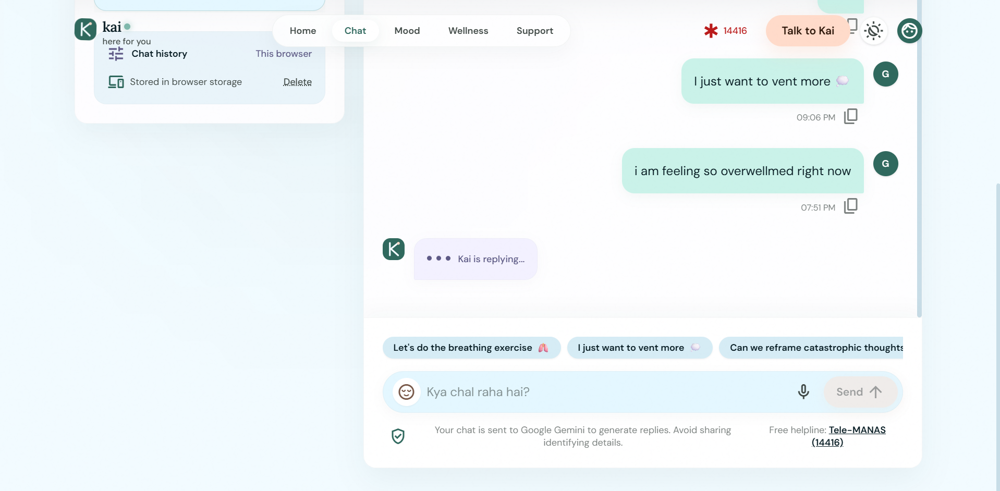
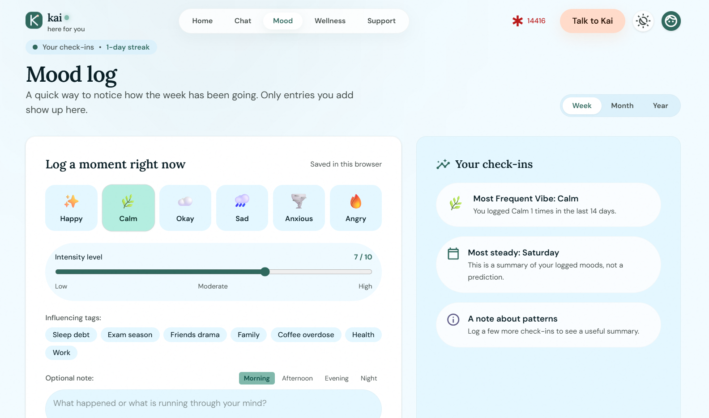

English and Hinglish chat
I included both languages so people can use the language that feels natural to them.

Kai · Wellness
An empathetic AI wellness companion for English and Hinglish chat, mood reflection, and private personal data.
Overview
Kai combines English and Hinglish chat with sentiment scoring and mood-trend charts. It also includes a friendly fallback when the AI is unavailable, secure sign-in, and privacy-first handling of personal data.
The Problem
Kai brings chat, mood reflection, and secure sign-in together, while accounting for moments when the AI is unavailable.
Who It's For
Kai is for people who want to chat in English or Hinglish and keep their wellness reflections private.
What I Made
Screens



Design Decisions
I included both languages so people can use the language that feels natural to them.
Sentiment scoring and mood-trend charts make mood patterns available to reflect on.
If the AI is unavailable, a friendly fallback keeps the experience from ending at a dead end.
Secure sign-in and privacy-first data handling give personal wellness information careful treatment.


What I Learned
Building Kai showed me that what I love most is making a product feel easy and kind to use.